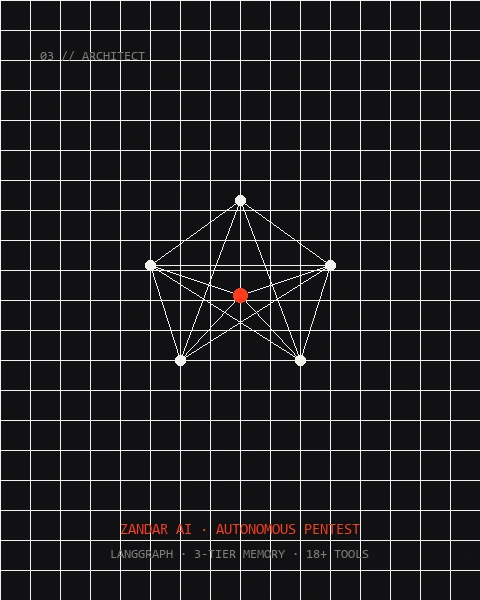
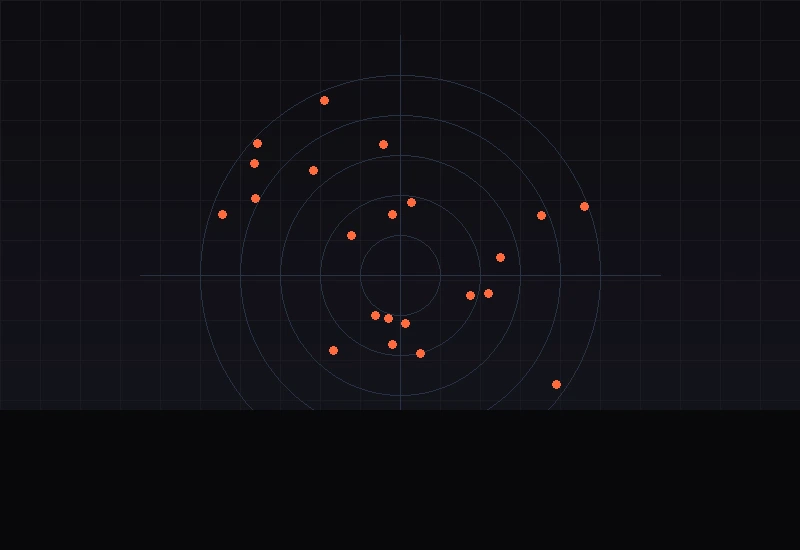
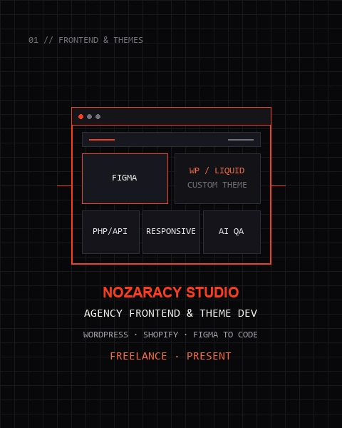

Technical Engineer and Universitas AMIKOM Yogyakarta graduate combining solid network engineering fundamentals with production frontend theme delivery and autonomous AI systems. Fully certified across the Cisco CCNA Trilogy (ENSA, SRWE, ITN) and Cisco Network Security, with verified competitive success as 2nd Place Winner at Digination Fest 2024 National Networking Competition (Dirkominfo PPI Dunia). Experienced in agency environments at Nozaracy Studio executing full-cycle delivery playbooks (Discovery to bespoke WordPress PHP & Shopify Liquid implementation, responsive QA, and Core Web Vitals audits), alongside hands-on enterprise IT infrastructure operations at PT Sangsaka Surya Karunia. Proven capability in engineering autonomous security agents and AI pipelines (LangGraph, Docker containerized tools, Amazon Bedrock, GraphRAG), maintaining strict architectural rigor and high production standards.
An autonomous, operator-supervised cybersecurity engine designed to run end-to-end vulnerability assessments and authorized penetration testing loops. Built on a modular LangGraph StateGraph architecture that coordinates 18+ containerized security binaries (nmap, nuclei, ffuf, sqlmap, httpx, naabu, subfinder, hydra) isolated inside secure Docker runtime containers.
Features Amazon Bedrock Multi-Model Routing (Claude 3.5 Sonnet for tactical attack graph synthesis, DeepSeek/Qwen for script generation), backed by a 3-tier GraphRAG long-term memory (Qdrant vector similarity + Neo4j infrastructure attack path graphs + PostgreSQL execution traces) with strict human-in-the-loop exploit authorization gates.

An enterprise-scale open-source intelligence aggregation and fact-checking platform. Implements 26 ingestion data adapters across 3 tiers (RSS feeds, GDELT global events, YouTube Data API, Google Play Store reviews, public Telegram channels, and Wayback Machine digital archives) running on a distributed Celery & Redis worker cluster.
Includes a custom fine-tuned IndoBERT NLP sentiment & classification model achieving a benchmark 0.894 F1 Score on the NusaX-Senti gold dataset. Integrated with an automated claim verification pipeline that cross-references extracted claims against official government datasets (BPS & BMKG) for high-confidence intelligence synthesis.

Full-cycle bespoke theme engineering agency playbook delivering high-performance e-commerce and corporate websites. Translates complex Figma design tokens into clean, modular, and maintainable codebases for both WordPress (PHP theme architecture, hooks, custom post types) and Shopify (Liquid theme architecture, custom sections, blocks) with 0% visual page-builder bloat.
Leverages modern AI-assisted workflows for rapid component scaffolding, schema synthesis, and automated test-case generation. Rigorously verified via automated multi-viewport QA (Playwright) and deep Core Web Vitals optimization, consistently securing LCP < 2.0s, CLS 0, and 90+ Lighthouse Performance prior to client delivery.
